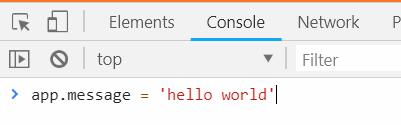
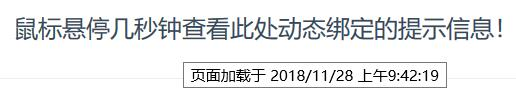
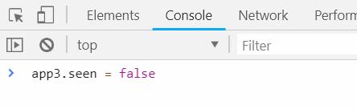
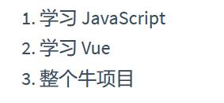
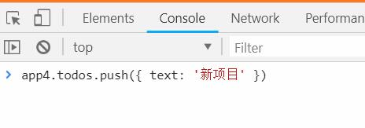
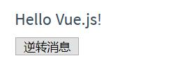
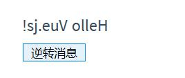
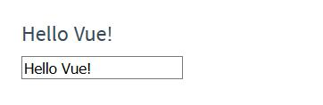
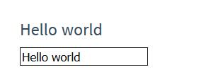
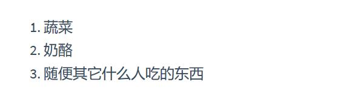

Vue (读音 /vjuː/，类似于 view) 是一套用于构建用户界面的渐进式
(1)框架。与其它大型框架不同的是，Vue 被设计为可以自底向上逐层应用。
(1) 渐进式指的就是可以一点一点(软着陆)的使用,也可以理解为一点一点的学习.官方指南假设你已了解关于 HTML、CSS 和 JavaScript 的中级知识。如果你刚开始学习前端开发，将框架作为你的第一步可能不是最好的主意——掌握好基础知识再来吧！之前有其它框架的使用经验会有帮助，但这不是必需的。
Vue在实际开发和部署都有极其复杂的环境配置.
但是对于学习来说我们只需要使用一个简单的<script>标签就可以了.
例如:
<script src="vue.js" ></script>
Vue的下载可以前往:
https://cn.vuejs.org/v2/guide/installation.html
基本来说你需要编写两个部分:
vue一旦插入网页中后就自动向全局注册了vue变量或者叫window下的属性比较好一些,自然类似于大部分工具例如jquery,实质上他是一个在全局挂载的函数而已.
Vue.js 的核心是一个允许采用简洁的模板语法
(1)来声明式地将数据渲染进 DOM 的系统：
(1) 所谓的声明式渲染指的就是以显式的声明来告诉Vue具体数据是如何输出的过程HTML:
<div id="app">
{{ message }}
</div>
JavaScript:
var app = new Vue({ // 新建一个Vue实例
el: '#app', // 告诉Vue的作用范围在 id为root这个元素内,root元素之外的依然是普通的html
data: {
message: 'Hello Vue!' // data 对象中存放的数据可以在HTML模板中输出
}
})
输出:
Hello Vue!
我们已经成功创建了第一个 Vue 应用！看起来这跟渲染一个字符串模板非常类似，但是 Vue 在背后做了大量工作。现在数据和 DOM 已经被建立了关联，所有东西都是响应式
(1)的。
(1) 响应式指的是当Vue实例内部数据改变后,html模板部分也会随着改变.我们要怎么确认呢？打开你的浏览器的 JavaScript 控制台 (就在这个页面打开)，并修改 app.message 的值，你将看到上例相应地更新。
图片:chrome控制台.

修改完成后输出为:
Hello world!
我们并没有修改HTML中的字符串,只是修改Vue实例而已,可以看到Vue做到了数据和HTML模板声明处的内容进行了数据绑定.
Vue中data上挂载的所有的属性都会被添加到Vue实例上.
也就是说如下的代码判断是正确的:
var app = new Vue({
el: 'app',
data: {
message: 'Hello Vue.js!'
}
})
app.message === 'Hello Vue.js!' // true
app.message === app.data.message // true
所以我们可以在控制台中直接修改app.message,因为他就是app.data.message.
除了使用{{ any }}的方式用于输出文本,我们还可以修改其他的部分,下面的例子我们动态的修改了元素的title属性.
HTML:
<div id="app-2">
<span v-bind:title="message">
鼠标悬停几秒钟查看此处动态绑定的提示信息！
</span>
</div>
JavaScript:
var app2 = new Vue({
el: '#app-2',
data: {
message: '页面加载于 ' + new Date().toLocaleString() // {1}
}
})
{1} 表达式 new Date().toLocaleString()会返回当前地区的时间,类型为string.介绍:这个例子中我们使用了v-bind:指令,该指令告诉Vue将数据和HTML元素的属性进行绑定.
当我们将鼠标移动到该元素上后会显示当前的时间.
图片:悬浮后的效果:

官方这节的解释:
这里我们遇到了一点新东西。你看到的 v-bind 特性被称为指令。指令带有前缀 v-，以表示它们是 Vue 提供的特殊特性。可能你已经猜到了，它们会在渲染的 DOM 上应用特殊的响应式行为。在这里，该指令的意思是：“将这个元素节点的 title 特性和 Vue 实例的 message 属性保持一致”。
控制切换一个元素是否显示也相当简单：
HTML:
<div id="app-3">
<p v-if="seen">现在你看到我了</p>
</div>
JavaScipt:
var app3 = new Vue({
el: '#app-3',
data: {
seen: true
}
})
在此处我们使用了v-if指令,该指令在条件为真的时候渲染具体的元素,在本例中他依附在了p元素上,也就是说他的判断会控制p元素是否出现在html中.
继续在控制台输入 app3.seen = false，你会发现之前显示的消息消失了。
图片:控制台输入内容.

这个时候你会发现p元素会自动的从html中消失.
还有其它很多指令，每个都有特殊的功能。例如，v-for 指令可以绑定数组的数据来渲染一个项目列表
(1)：
(1) 实际上就是数组HTML:
<div id="app-4">
<ol>
<li v-for="todo in todos">
{{ todo.text }}
</li>
</ol>
</div>
JavaScript:
var app4 = new Vue({
el: '#app-4',
data: {
todos: [
{ text: '学习 JavaScript' },
{ text: '学习 Vue' },
{ text: '整个牛项目' }
]
}
})
图片:输出.

分析:v-for指令会遍历指定列表中的所有内容,在本例中就是todos,在列表中有多少个元素就会执行多少次循环,每次循环中的内容会被临时存放到一个变量中本例中是todo,而todo中存放的是一个对象其text键上保存了我们需要的字符串,所以我们使用todo.text来获取具体的内容.
在控制台里，输入 app4.todos.push({ text: '新项目' })
{1}，你会发现列表最后添加了一个新项目。
{1} array.push()语法会将数组的末尾添加一个新的元素.图片:控制台数组添加内容.

在这个例子中我们使用v-on指令和之前的例子不同,这次我们绑定的不是一个属性,而是一个方法.
为了让用户和你的应用进行交互，我们可以用 v-on 指令添加一个事件监听器，通过它调用在 Vue 实例中定义的方法：
HTML:
<div id="app-5">
<p>{{ message }}</p>
<button v-on:click="reverseMessage">逆转消息</button> // v-on后面跟随的是标准的DOM事件名称,点击事件的标准名称为click
</div>
JavaScript:
var app5 = new Vue({
el: '#app-5',
data: {
message: 'Hello Vue.js!'
},
methods: {
reverseMessage: function () {
this.message = this.message.split('').reverse().join('') // {1}
}
}
})
图片:没有点击按钮时候的样子:

图片:点击按钮后的样子:

{1} message.split('').reverse().join('')执行步骤为: 将字符串转为字符串序列(数组)->将数组每一项反转->将数组合并为字符串.解析:在HTML模板中的v-on:click="reverseMessage"意思就是点击的时候触发用户提供的reverseMessage事件.
这里涉及到了Vue实例上的一个新的属性methods该对象上挂载的所有内容都必须是方法,在Vue上用户提供的所有方法都会在methods属性上集中起来.
Vue的this指的就是Vue实例本身,上面的例子方法还可以做如下的判断:
reverseMessage: function () {
console.log(this === app5); // true
console.log(this.message === app5.message); // true
console.log(this.message === app5.data.message); //true
this.message = this.message.split('').reverse().join('')
}
Vue 还提供了 v-model 指令，它能轻松实现表单输入和应用状态之间的双向绑定
(1)。
(1) 之前的例子中我们做的绑定都是单向绑定,也就是说Vue实例的数据变化会在HTML模板中展现出来,而双向绑定多了在HTML模板中的变化会影响到Vue实例中的数据.HTML:
<div id="app-6">
<p>{{ message }}</p>
<input v-model="message">
</div>
JavaScript:
var app6 = new Vue({
el: '#app-6',
data: {
message: 'Hello Vue!'
}
})
图片:未输入内容的效果.

图片:输入内容的效果.

组件系统是 Vue 的另一个重要概念，因为它是一种抽象，允许我们使用小型、独立和通常可复用的组件构建大型应用。仔细想想，几乎任意类型的应用界面都可以抽象为一个组件树：
图片:组件的基础概念:
分析:你可以理解为网页中有很多重复的部分例如:
我知道你想说什么,是的不同页面甚至在同一个页面中这些东西看起来都是不同的.但是编程就是一门抽象的艺术,不同的外观只是CSS样式不同而已,但是他们的使用逻辑都是固定的,例如:一个导航栏绝对不可能播放视频,而一个按钮绝对不可能当作导航栏来使用.
我们在编程中如果出项重复的部分我们会如何对待他?当然最简单的操作就是我们会定义一个函数将这些重复的部分打包.
是的Vue的组件(实际上其他框架中也是)就是指的这种概念,我们将网页中每个部分都拆开,利用Vue将他们封装为一个个单独的组件.
使用这些组件就像调用一个函数一样,我们可以if后调用也可以for循环中调用.
当然这还让人摸不着头脑,例如我们有一个导航栏,但是按钮如果和导航栏是两个东西,那么导航栏如何知道这个按钮被点击的?
不用担心这些答案都会在后面的章节中逐一揭开.
这里例子中举了一个简单例子来使用Vue的组件.但是不用担心组件在这章中不是重点内容.
在 Vue 里，一个组件本质上是一个拥有预定义选项的一个 Vue 实例。在 Vue 中注册组件很简单：
// 定义名为 todo-item 的新组件
Vue.component('todo-item', {
template: '<li>这是个待办项</li>' // 组件的特性 template 属性
})
现在你可以用它构建另一个组件模板：
<ol>
<!-- 创建一个 todo-item 组件的实例 -->
<todo-item></todo-item>
</ol>
但是这样会为每个待办项渲染同样的文本，这看起来并不炫酷。我们应该能从父作用域将数据传到子组件才对。让我们来修改一下组件的定义，使之能够接受一个 prop
(1)：
(1) 简单的理解 prop中的内容类似于定义函数中的参数Vue.component('todo-item', {
// todo-item 组件现在接受一个
// "prop"，类似于一个自定义特性。
// 这个 prop 名为 todo。
props: ['todo'],
template: '<li>{{ todo.text }}</li>'
})
现在，我们可以使用 v-bind 指令将待办项传到循环输出的每个组件中： 完整的HTML部分:
<div id="app-7">
<ol>
<!--
现在我们为每个 todo-item 提供 todo 对象
todo 对象是变量，即其内容可以是动态的。
我们也需要为每个组件提供一个“key”，稍后再
作详细解释。
-->
<todo-item
v-for="item in groceryList"
v-bind:todo="item"
v-bind:key="item.id">
</todo-item>
</ol>
</div>
完整的JavaScript部分:
Vue.component('todo-item', {
props: ['todo'],
template: '<li>{{ todo.text }}</li>'
})
var app7 = new Vue({
el: '#app-7',
data: {
groceryList: [
{ id: 0, text: '蔬菜' },
{ id: 1, text: '奶酪' },
{ id: 2, text: '随便其它什么人吃的东西' }
]
}
})
图片:输出:

尽管这只是一个刻意设计的例子，但是我们已经设法将应用分割成了两个更小的单元。子单元通过 prop 接口与父单元进行了良好的解耦。我们现在可以进一步改进
组件，提供更为复杂的模板和逻辑，而不会影响到父单元。
在一个大型应用中，有必要将整个应用程序划分为组件，以使开发更易管理。在后续教程中我们将详述组件，不过这里有一个 (假想的) 例子，以展示使用了组件的应用模板是什么样的：
<div id="app">
<app-nav></app-nav>
<app-view>
<app-sidebar></app-sidebar>
<app-content></app-content>
</app-view>
</div>